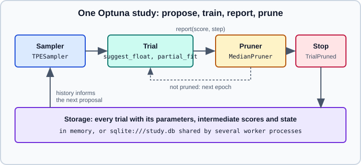

Hyperparameter Tuning at Scale: Halving, Optuna & Parallelism
|
This content was generated with the assistance of AI and should be verified against the official documentation before being relied on in production. |
This page is about the cost of hyperparameter search once a plain grid is too slow, and about the tools that cut that cost. The mechanics of GridSearchCV, RandomizedSearchCV, cv_results_, scoring and refit, and the basics of successive halving are in Grid, Randomized & Halving Search; they are not repeated here. Parallelism in general (joblib, OpenMP, BLAS) is in Performance and Parallelism.
Examples were run on Python 3.13 with scikit-learn 1.9.1, Optuna 5.0.0, optuna-integration 5.0.0 and joblib 1.6.0 on 2026-11-01. Timings in particular will differ on your machine.
Where the cost of a search comes from
A search fits the estimator once per candidate and per cross-validation split, plus one refit on all the development data. With \(C\) candidates, \(K\) splits and a mean fit time \(t\) the training cost is roughly
\[ C \cdot K \cdot t + t_{\text{refit}} \]
Every technique on this page attacks one factor of that product:
| Factor | Technique | Trade-off |
|---|---|---|
\(C\), candidates |
Random search instead of a grid; model-based search (Optuna) that proposes better candidates than random ones. |
Fewer evaluations, but no guarantee that the best cell of a grid is visited. |
\(t\), cost of one fit |
Successive halving (small budget first); pruning of bad trials; a cheaper model or a subsample for the exploratory phase. |
Scores measured on a small budget are noisy and sometimes rank candidates differently from the full budget. |
\(K\), splits |
Fewer folds (3 instead of 5) while exploring; a single validation split for very large data. |
Higher variance of each score. |
Wall-clock time |
Running candidates in parallel with |
Needs cores and memory; nested parallelism can make things slower. |
Two rules apply to all of them. First, the search never touches the final test set: split first, search on the development part, and keep the test split for one last measurement (or nest the search inside an outer cross-validation, see Cross-Validation & Splitters). Second, the best score of any search is optimistically biased, and the more candidates and the noisier the score, the larger the bias. A smarter search that evaluates 500 candidates overfits the validation folds more than a grid of 12.
Successive halving with a budget in mind
HalvingGridSearchCV and HalvingRandomSearchCV evaluate every candidate on a small amount of a resource, keep the best \(1/\text{factor}\) of them and give the survivors \(\text{factor}\) times more resource, until the last round uses the maximum. Both are experimental and must be enabled with from sklearn.experimental import enable_halving_search_cv. The parameters that control the budget are:
| Parameter | Meaning |
|---|---|
|
The proportion that survives each round (one third by default) and the growth of the resource. A larger factor eliminates faster and risks dropping a slow starter; 2 is more cautious. |
|
What grows from round to round. It can be any positive-integer parameter of the estimator, such as |
|
The resource of the first round. |
|
How many candidates start. |
|
When there are too few resources to get down to at most |
The fitted object records what happened: n_candidates_ and n_resources_ list the candidates and the resource of every round, n_iterations_ counts the rounds, and cv_results_ has an iter column telling in which round each row was measured.
import numpy as np
from scipy.stats import randint
from sklearn.datasets import make_classification
from sklearn.ensemble import RandomForestClassifier
from sklearn.experimental import enable_halving_search_cv # noqa: F401
from sklearn.model_selection import HalvingRandomSearchCV, train_test_split
X, y = make_classification(n_samples=6000, n_features=30, n_informative=8, random_state=0)
X_dev, X_test, y_dev, y_test = train_test_split(X, y, test_size=0.2, stratify=y, random_state=0)
space = {"max_depth": randint(3, 20), "min_samples_leaf": randint(1, 30), "max_features": [0.2, 0.5, "sqrt"]}
base = RandomForestClassifier(n_estimators=50, random_state=0)
halving = HalvingRandomSearchCV(base, space, n_candidates=60, factor=3, min_resources=200,
cv=3, random_state=0, n_jobs=-1).fit(X_dev, y_dev)
print("candidates per round:", halving.n_candidates_)
print("samples per candidate:", halving.n_resources_)
spent = sum(c * r for c, r in zip(halving.n_candidates_, halving.n_resources_))
full = 60 * len(X_dev)
print("training rows seen per CV split, relative to a full random search:", round(spent / full, 2))
final = np.flatnonzero(halving.cv_results_["iter"] == halving.n_iterations_ - 1)
print("candidates in the last round:", len(final))
print("best params:", halving.best_params_)
print("test accuracy:", round(halving.score(X_test, y_test), 3))
# the resource can be a model parameter instead of the number of samples
by_trees = HalvingRandomSearchCV(RandomForestClassifier(random_state=0), space, resource="n_estimators",
max_resources=120, min_resources=10, n_candidates=30, factor=3,
cv=3, random_state=0, n_jobs=-1).fit(X_dev, y_dev)
print(by_trees.n_resources_, by_trees.n_candidates_, by_trees.best_params_["n_estimators"])Output:
candidates per round: [60, 20, 7]
samples per candidate: [200, 600, 1800]
training rows seen per CV split, relative to a full random search: 0.13
candidates in the last round: 7
best params: {'max_depth': 12, 'max_features': 0.5, 'min_samples_leaf': 1}
test accuracy: 0.969
[10, 30, 90] [30, 10, 4] 90Source: https://scikit-learn.org/stable/modules/generated/sklearn.model_selection.HalvingRandomSearchCV.html
The ratio in the third line is an estimate of the training data processed (candidates times rows, ignoring the fact that each fold trains on part of the rows and that fit time is not exactly linear in the rows), not a measured speed-up. Use it to see how the budget is spent before you launch an expensive run.
Things to know when reading the result:
-
best_estimator_,best_params_andbest_score_come from the last round only. Rows from early rounds ofcv_results_can show higher scores because they were measured on fewer rows and are noisier; do not rank across rounds. Filter withcv_results_["iter"] == halving.n_iterations_ - 1for a fair table. -
A small first round can mislead. A deep forest or a kernel SVM with a large
Cmay look worse than a shallow one on 200 rows and better on 6000. If the ranking changes with the budget, successive halving removes the eventual winner. Raisemin_resources, lowerfactor, or use a model parameter such asn_estimatorsas the resource, for which fewer trees is a good approximation of more trees. -
Classification needs every class in the smallest subset. With rare classes use an integer
min_resourceslarge enough to contain them, and checkn_resources_[0]. -
Halving needs a resource that matters. For models whose cost does not grow with the rows (a nearest-neighbour model that only stores data) it saves little.
-
n_jobsparallelises the candidates of a round, the same way as in the plain searches.
Parallel searches without oversubscription
Candidates and folds are independent, so n_jobs=-1 on the search is the cheapest speed-up available. The pitfalls are the same as in Performance and Parallelism and become costly during a search:
-
Oversubscription. A
HistGradientBoostingClassifieralready uses all cores through OpenMP.GridSearchCV(n_jobs=-1)over it asks for cores times cores threads. The defaultlokybackend of joblib tells its worker processes to usen_cpus // n_jobsthreads, which fixes the common case, but a threading backend or manualOMP_NUM_THREADSsettings do not get that protection. Pick one layer to own the cores. -
pre_dispatch. The searches takepre_dispatch(default"2*n_jobs"), the number of jobs created ahead of the workers. Lower it when creating jobs is memory-hungry, because every queued job may hold a copy of its data subset. -
Memory. With the
lokybackend each worker is a process. Arrays larger than 1 MB are shared through memory maps, but estimators and intermediate results are copied. A forest with 500 deep trees per candidate multiplied by the number of workers can exhaust RAM; use fewer workers or smaller models while exploring. -
The first parallel call is slow because the worker pool is started; later calls reuse it.
The context manager joblib.parallel_config selects the backend and caps the threads of the inner libraries, without touching the code of the search:
import time
from joblib import parallel_config
from sklearn.datasets import make_classification
from sklearn.ensemble import HistGradientBoostingClassifier
from sklearn.model_selection import GridSearchCV
X, y = make_classification(n_samples=20000, n_features=40, random_state=0)
grid = {"learning_rate": [0.05, 0.1, 0.2], "max_leaf_nodes": [15, 31]}
est = HistGradientBoostingClassifier(max_iter=100, random_state=0)
for label, kwargs, ctx in [
("n_jobs=1", dict(n_jobs=1), None),
("n_jobs=-1 (loky)", dict(n_jobs=-1, pre_dispatch="2*n_jobs"), None),
("loky, inner threads=1", dict(n_jobs=-1), dict(backend="loky", inner_max_num_threads=1)),
]:
t = time.perf_counter()
if ctx:
with parallel_config(**ctx):
GridSearchCV(est, grid, cv=3, **kwargs).fit(X, y)
else:
GridSearchCV(est, grid, cv=3, **kwargs).fit(X, y)
print(label, round(time.perf_counter() - t, 1), "s")Output on a 10-core machine (timings vary a lot between machines):
n_jobs=1 27.5 s
n_jobs=-1 (loky) 9.9 s
loky, inner threads=1 5.1 sThe user guide still shows the older joblib.parallel_backend context manager; parallel_config is its newer joblib equivalent (check the joblib documentation for the version you install). Treat any timing as a measurement to repeat on your hardware: the point is to compare the three settings on your own search before leaving a long run unattended.
Optuna: model-based search with pruning
Random search and halving do not learn from the candidates already evaluated. Optuna is a separate hyperparameter-optimisation library that does: its default TPE (tree-structured Parzen estimator) sampler models which regions of the space gave good scores and proposes new points there, and its pruners stop a trial whose intermediate scores look hopeless. It is not part of scikit-learn; install it with pip install optuna, and pip install optuna-integration for the scikit-learn class described below.

The vocabulary is small. A study is one optimisation task with a direction ("maximize" for accuracy-like scores, "minimize" for losses). A trial is one evaluation: you write an objective(trial) function that asks the trial for parameter values (suggest_float, suggest_int, suggest_categorical, with log=True for scale parameters), builds and evaluates a scikit-learn model and returns the score. The scoring convention differs from scikit-learn’s "greater is better" only in that you choose the direction yourself.
import numpy as np
import optuna
from sklearn.datasets import load_digits
from sklearn.ensemble import HistGradientBoostingClassifier
from sklearn.linear_model import SGDClassifier
from sklearn.model_selection import cross_val_score, train_test_split
optuna.logging.set_verbosity(optuna.logging.WARNING)
X, y = load_digits(return_X_y=True)
X_dev, X_test, y_dev, y_test = train_test_split(X, y, test_size=0.2, stratify=y, random_state=0)
def objective(trial):
params = {
"learning_rate": trial.suggest_float("learning_rate", 1e-3, 0.5, log=True),
"max_leaf_nodes": trial.suggest_int("max_leaf_nodes", 4, 64, log=True),
"l2_regularization": trial.suggest_float("l2_regularization", 1e-6, 10.0, log=True),
}
model = HistGradientBoostingClassifier(max_iter=60, random_state=0, **params)
return cross_val_score(model, X_dev, y_dev, cv=3).mean()
study = optuna.create_study(direction="maximize", sampler=optuna.samplers.TPESampler(seed=0))
study.optimize(objective, n_trials=15)
print("best value:", round(study.best_value, 4))
print("best params:", {k: round(v, 4) for k, v in study.best_params.items()})
print("trials:", len(study.trials))
# pruning with an incremental learner: report the validation score after every epoch
X_tr, X_val, y_tr, y_val = train_test_split(X_dev, y_dev, test_size=0.25, stratify=y_dev, random_state=1)
def objective_pruned(trial):
clf = SGDClassifier(alpha=trial.suggest_float("alpha", 1e-6, 1e-1, log=True),
learning_rate="constant", eta0=trial.suggest_float("eta0", 1e-4, 1e-1, log=True),
random_state=0)
for epoch in range(20):
clf.partial_fit(X_tr, y_tr, classes=np.unique(y))
score = clf.score(X_val, y_val)
trial.report(score, step=epoch)
if trial.should_prune():
raise optuna.TrialPruned()
return score
study2 = optuna.create_study(direction="maximize", sampler=optuna.samplers.TPESampler(seed=0),
pruner=optuna.pruners.MedianPruner(n_startup_trials=5, n_warmup_steps=3))
study2.optimize(objective_pruned, n_trials=30)
states = [t.state.name for t in study2.trials]
print({s: states.count(s) for s in sorted(set(states))})
print("best:", round(study2.best_value, 4))Output:
best value: 0.9666
best params: {'learning_rate': 0.3545, 'max_leaf_nodes': 16, 'l2_regularization': 0.0008}
trials: 15
{'COMPLETE': 12, 'PRUNED': 18}
best: 0.9528Source: https://optuna.org/ (Optuna documentation, https://optuna.readthedocs.io/)
Points that matter in practice:
-
Pruning needs intermediate values. A model fitted in one call, such as a random forest, has nothing to report, so the second objective above uses an estimator with
partial_fitand reports the validation score once per epoch.MedianPrunerstops a trial whose value at a step is worse than the median of earlier trials at that step;n_startup_trialsandn_warmup_stepsprotect the first trials and the first epochs from being pruned on too little evidence. Gradient boosting libraries have their own early stopping insidefit, see HistGradientBoosting vs XGBoost, LightGBM & CatBoost. -
Search the pipeline, evaluate it in cross-validation. The first objective builds the model inside the objective and scores it with
cross_val_scoreon the development part only. If preprocessing is needed, put it in aPipelineinside the objective so it is refitted in every fold (see Pipelines). -
Reproducibility. Seed the sampler (
TPESampler(seed=0)) and the estimator. A study evaluated with several threads or processes at once is not exactly reproducible, because the order in which results arrive changes what the sampler sees. -
Keep the number of trials honest. The best value of a study is biased upward for the same reason as for any search. Report the score of the refitted best model on the untouched test set, not
study.best_value. -
Importance and diagnostics.
optuna.importance.get_param_importances(study)and the plotting functions inoptuna.visualizationshow which parameters mattered; they are optional extras that need the plotting dependencies.
OptunaSearchCV: the scikit-learn interface
The optuna-integration package ships OptunaSearchCV, a class that follows the scikit-learn search API (fit, predict, best_params_, best_score_, best_estimator_) and delegates the proposals to an Optuna study. Instead of lists and scipy distributions it takes Optuna distribution objects. The documentation marks it as experimental, added in version 0.17.0 of the integration package, and says its interface may change without prior notice.
import optuna
from optuna.distributions import FloatDistribution, IntDistribution
from optuna_integration import OptunaSearchCV
from sklearn.datasets import load_breast_cancer
from sklearn.linear_model import SGDClassifier
from sklearn.pipeline import make_pipeline
from sklearn.preprocessing import StandardScaler
optuna.logging.set_verbosity(optuna.logging.WARNING)
X, y = load_breast_cancer(return_X_y=True)
pipe = make_pipeline(StandardScaler(), SGDClassifier(loss="log_loss", random_state=0))
dists = {"sgdclassifier__alpha": FloatDistribution(1e-6, 1e-1, log=True),
"sgdclassifier__max_iter": IntDistribution(5, 50)}
study = optuna.create_study(direction="maximize", sampler=optuna.samplers.TPESampler(seed=0))
search = OptunaSearchCV(pipe, dists, cv=3, n_trials=15, study=study, random_state=0, refit=True).fit(X, y)
print(round(search.best_score_, 4), {k: round(v, 5) for k, v in search.best_params_.items()})
print(search.predict(X[:3]), len(search.trials_dataframe()))Output:
0.9772 {'sgdclassifier__alpha': 0.00639, 'sgdclassifier__max_iter': 49}
[0 0 0] 15With optuna-integration 5.0.0 and Optuna 5.0.0 every trial also emits a FutureWarning saying that the optuna.terminator module, which OptunaSearchCV uses internally, has been deprecated since Optuna 4.9.0 and will be removed in 6.0.0. It comes from the integration package, not from your code. Small max_iter values also produce scikit-learn’s usual ConvergenceWarning for SGDClassifier.
From the signature in the documentation: n_trials (default 10) and timeout bound the search, and when both are None it runs until it is interrupted; study lets you pass your own study (sampler, pruner, storage); scoring, cv, refit, error_score and return_train_score behave as in scikit-learn; enable_pruning=True activates pruning when the estimator supports partial_fit, using max_iter (default 1000) as the number of incremental steps; subsample (default 1.0) fits on a fraction of the data. Scorers follow scikit-learn’s convention, so the study direction is maximise: multiply a loss by minus one. The class evaluates trials with threads when n_jobs is given, which the documentation says may be limited by the GIL; for CPU-bound models use separate processes, described next.
Several workers, one study
For a search that takes hours, run the same script in several processes, or on several machines, pointing at one shared storage. Each worker asks the storage for the history of all trials, so the sampler benefits from what the others found. With a SQLite file this works on one machine; a networked database (PostgreSQL, MySQL) is the usual choice across machines.
# setup.py: run once before starting the workers
import optuna
optuna.create_study(study_name="digits", storage="sqlite:///study.db", direction="maximize")# worker.py: start several copies, each with its own seed: python worker.py 1 & python worker.py 2 &
import sys
import optuna
from sklearn.datasets import load_digits
from sklearn.linear_model import LogisticRegression
from sklearn.model_selection import cross_val_score
optuna.logging.set_verbosity(optuna.logging.WARNING)
X, y = load_digits(return_X_y=True)
def objective(trial):
C = trial.suggest_float("C", 1e-4, 1e2, log=True)
return cross_val_score(LogisticRegression(C=C, max_iter=300), X, y, cv=3).mean()
study = optuna.load_study(study_name="digits", storage="sqlite:///study.db",
sampler=optuna.samplers.TPESampler(seed=int(sys.argv[1])))
study.optimize(objective, n_trials=5)
print("worker", sys.argv[1], "sees", len(study.trials), "trials")# read.py: inspect the shared study afterwards
import optuna
study = optuna.load_study(study_name="digits", storage="sqlite:///study.db")
print(len(study.trials), "trials in total, best C =", round(study.best_params["C"], 4))Output after running the setup once, the two workers at the same time, and the reader:
worker 1 sees 10 trials
worker 2 sees 10 trials
10 trials in total, best C = 0.0409The study is created in a separate step on purpose: when several processes call create_study at the same instant on a fresh SQLite file, even with load_if_exists=True, one of them can fail while creating the database tables, with sqlalchemy.exc.IntegrityError: (sqlite3.IntegrityError) UNIQUE constraint failed: alembic_version.version_num. Create the study once, then let the workers load it. Give each worker a different sampler seed, or the first random trials of the workers are identical. SQLite locks the file on writes, so it suits a handful of workers whose trials take seconds or longer, not hundreds of workers.
Choosing a tool
| Situation | Use | Why |
|---|---|---|
Few parameters, cheap model |
|
No extra dependency, exhaustive or unbiased sampling. |
Cost grows with the rows or with an iteration-like parameter, and there are many candidates |
|
Part of scikit-learn, cheap rounds first. Experimental. |
Continuous or conditional parameters, an expensive model, an incremental learner that reports progress |
Optuna with a pruner |
Learns from earlier trials, stops hopeless ones, distributes over processes. |
You want the search to look like any other scikit-learn estimator inside a larger workflow |
|
Same |
The estimator has a built-in path, such as regularisation strength |
|
One path is almost as cheap as one fit; see Grid, Randomized & Halving Search. |
For neural networks trained with PyTorch or Keras the tools are different (Keras Tuner, Ray Tune, Optuna with epoch-level pruning); see Keras Tuner and Deep Learning Tuning Playbook.
Common pitfalls
-
Tuning many parameters of a model that has two influential ones. A big search space dilutes the budget; fix the unimportant parameters.
-
Linear scales for parameters that act multiplicatively (
C,alpha,learning_rate); uselog=Truein Optuna orloguniformfromscipy.stats. -
Reporting the best search score as the expected performance. Use a held-out test set or nested cross-validation.
-
Running a parallel search over a model that is itself parallel, or over a very large model per worker, until the machine swaps.
-
Pruning on a score that is not monotone in the steps, or on too few warm-up steps, which kills good late bloomers.
-
Using a different cross-validation splitter in the search and in the final evaluation, so the numbers are not comparable.
-
Forgetting that
HalvingRandomSearchCV.best_score_was measured on the last round’s resource and is not comparable with the score of a plain search.
Where older books and tutorials are outdated
-
Many tutorials stop at grid search; they do not mention halving, which needs
enable_halving_search_cvand is still experimental, or model-based search. -
The Optuna-style scikit-learn class used to be documented as
optuna.integration.OptunaSearchCVinside the Optuna package. Integrations were split into the separateoptuna-integrationpackage, so the import in current code isfrom optuna_integration import OptunaSearchCV. -
Examples that use
sklearn.grid_searchorGridSearchCV.grid_scores_belong to scikit-learn before 0.18; usesklearn.model_selectionandcv_results_.